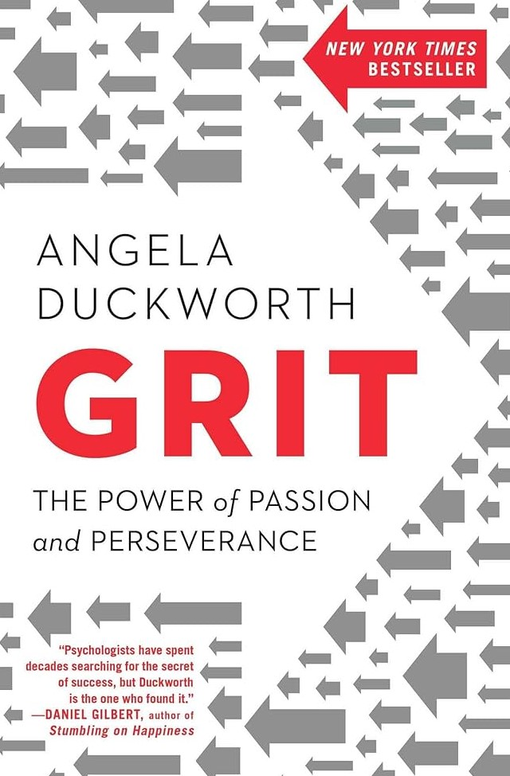

Grit
Author: Angela Duckworth
Genre: psychology
Price: $5.66
Genre: psychology
Price: $5.66
Description: Angela Duckworth's seminal work, "Grit: The Power of Passion and Perseverance," serves as a guiding light illuminating the profound interplay between resilience, dedication, and the attainment of success. Within its pages, Duckworth delves deeply into the intricate mechanics of achievement, highlighting the indispensable role that unwavering passion and unwavering perseverance play in propelling individuals toward their goals.
Through a meticulous amalgamation of rigorous research and poignant anecdotes, Duckworth constructs a compelling argument that success is not merely a product of innate talent or luck but is profoundly shaped by the relentless pursuit of one's passions coupled with an unyielding resolve to persevere in the face of challenges. She underscores the significance of sustained effort over time, emphasizing that true mastery and accomplishments are the fruits of consistent dedication rather than momentary flashes of brilliance.
The book resonates with readers on a personal level, inspiring introspection and encouraging a reevaluation of the conventional notions surrounding achievement. It serves as a roadmap, offering invaluable insights into how individuals can cultivate grit within themselves, fostering a mindset geared towards long-term goals and a determination to weather the storms encountered along the path to success.
Ultimately, Duckworth's "Grit" stands as a testament to the transformative power of passion and perseverance, illuminating a path for individuals to forge their way toward greatness through unwavering dedication and resilience